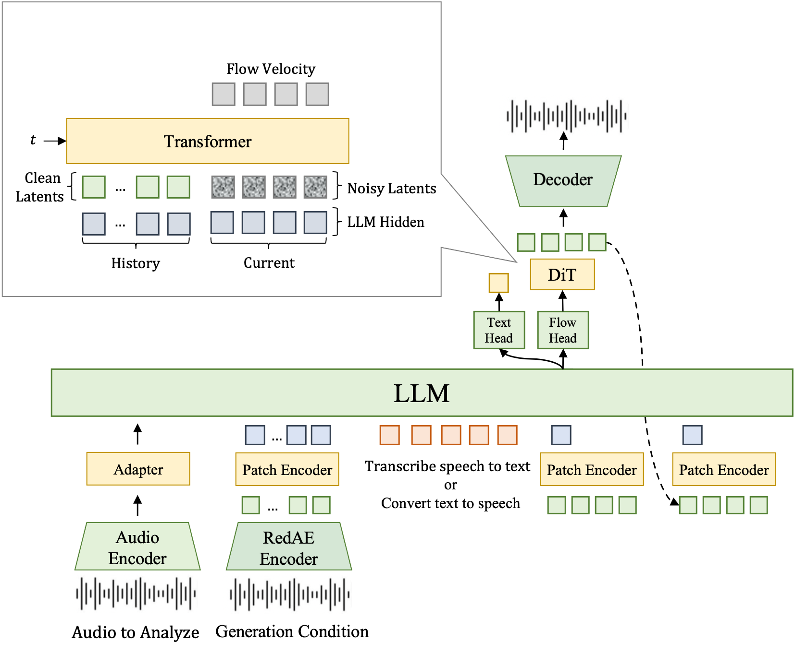
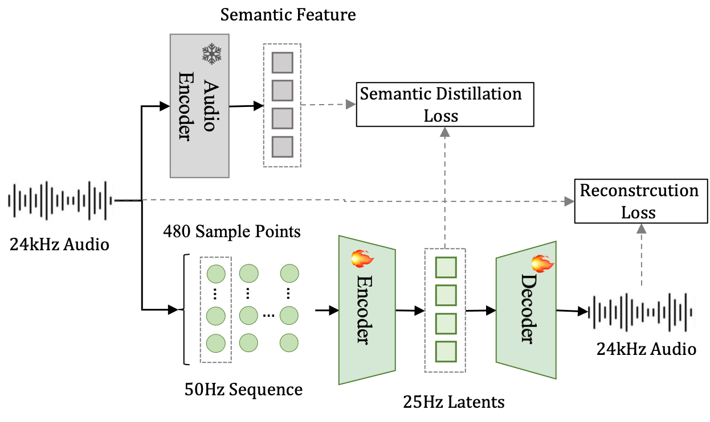

FireRed Team
Abstract: A unified audio model must recognize and understand linguistic, paralinguistic, and environmental information while supporting speech synthesis and editing. A key challenge is representation: understanding favors compact features suited to long-context modeling, whereas speech generation requires reconstructible features that preserve fine-grained acoustic detail. We introduce FireRedAudio, a general-purpose audio language model with a shared 9B-parameter LLM. To the best of our knowledge, it is the first publicly disclosed unified audio-language model to provide separate continuous input representations for understanding and generation within a single trainable autoregressive LLM. Audio to be recognized or analyzed is processed by a dedicated Audio Encoder, while speech inputs for generation use a RedAE-based pathway. The LLM directly generates text or conditions a flow-matching DiT to produce continuous acoustic latents. Through progressive multitask training, FireRedAudio supports ASR and audio understanding, with the latter extending to recordings of up to one hour, as well as zero-shot TTS, Instruct TTS, and semantic and acoustic speech editing. Its structured organization of long-form audio achieves second-level timestamp accuracy. Across comprehensive evaluations, FireRedAudio achieves competitive or leading performance in audio understanding and multilingual ASR, strong content accuracy and speaker preservation in zero-shot TTS, leading instruction following in Instruct TTS, and substantial improvements over Ming-UniAudio-Edit in both semantic and acoustic speech editing. These results demonstrate the viability of decoupled continuous input representations for unifying audio understanding and continuous-latent speech generation in a model of moderate scale.


Our main contributions are summarized as follows:
| Language | Prompt Speech | Prompt Text | Generated Text | Generated |
|---|---|---|---|---|
| Chinese | 同时，他强调微调要科学有序。 | 安徽淮南秦师傅发现，停在小区的爱车右前驾驶窗玻璃被砸。 | ||
| 产业互联网时代，面临很多安全挑战。 | 自动驾驶将大幅提升出出行安全，效率。 | |||
| 它朝男孩冻红的鼻尖扔了一块冰，男孩立即弯起弓。 | 阳台和窗台附近不要放置矮柜，凳子等可供攀爬的家具。 | |||
| English | Each year there is a special on Japanese television and radio featuring her songs. | He has dual American and Danish citizenship, since his father is Danish. | ||
| It has five mountain ranges and nineteen peaks. | Dempsey became a household name, and he dated and married Hollywood actresses. | |||
| Might others within your organisation have some inkling as to their desires? | For a long time, the city's downfall was attributed to its second sacking. |
| Instruction | CoT | Text | Generated |
|---|---|---|---|
| 使用标准普通话,表现出敏感机警的女童声线,以稚嫩的音色和压低的音量传达,语调带有紧张感地描述事件,语速保持较快,确保整体表达流畅。 | [性别] 女 [年龄] 儿童 [音高] 高 [音色质感] 清亮稚嫩 [音量] 较轻 [口音] 普通话 [情绪] 紧张 [流畅度] 流畅 [语速] 快 [清晰度] 清晰 [语调] 陈述 [性格] 敏感多疑 | 小和叔叔今天反动派在大街码头都增加了港少准，又是要干坏事。 | |
| 性别: 男性. 音高: 男性沉稳中低音. 语速: 语速舒缓，有自然停顿. 音量: 正常谈话音量. 年龄: 中老年男性. 清晰度: 吐字清晰，发音标准. 流畅度: 言语连贯，表达自然. 口音: 标准普通话. 音色质感: 音质温和，略显沧桑. 情绪: 饱含不舍与怀念，转为平静嘱托. 语调: 前段感叹意味，后段请求意味. 性格: 念旧重情，温和坦诚. | [性别] 男 [年龄] 老年 [音高] 中低 [音色质感] 温暖 [音量] 正常 [口音] 普通话 [情绪] 怀念 到 平静 [流畅度] 流畅 [语速] 慢 [清晰度] 清晰 [语调] 感叹 到 请求 [性格] 温和坦诚 | 这就是天望娃娃送给我的我一直舍不得丢掉它，你替我上交了吧。 | |
| 以女性高音区的清亮音色,表现出青年阶段的特质,音量略强,语速适中稍快,语调带有解释意味和急切的情感流露,确保语音流畅自然。 | [性别] 女 [年龄] 青年 [音高] 中高 [音色质感] 清亮 [音量] 较响 [口音] 普通话 [情绪] 急切 [流畅度] 流畅 [语速] 快 [清晰度] 清晰 [语调] 陈述 [性格] 外向开朗 | 是我请他来的，可他什么也不知道，他来只是想打听一下，你们厂是不是有旧锅炉？ | |
| 在讲述悲惨事件的关键点时,声音充满戏剧性与焦急,句尾情绪逐渐激昂。 | [性别] 男 [年龄] 中年 [音高] 中 到 高 [音色质感] 清亮 [音量] 正常 到 响 [口音] 普通话 [情绪] 焦急 到 愤怒 [流畅度] 流畅 [语速] 快 [清晰度] 清晰 [语调] 抑扬顿挫 [性格] 果敢决断 | 国内都罢工了，在家里很安全，可在这儿却送了命。 | |
| Let emotion drive the speech with rapid escalation in both pace and volume, embodying intense anger followed by profound disappointment. Articulate distinctly, even at heightened speeds, and drop the pitch slightly with exasperation as the delivery concludes. | [gender] male [age] middle_age [pitch] medium_low to low [texture] raspy [volume] loud to quiet [accent] american [emotion] angry to disappointed [fluency] fluent [speed] fast to slow [clarity] clear [tone] confrontational to resigned [personality] assertive | I have the attitude problem. Nah, brother, nah. You got the attitude problem, okay? I gave my heart and my soul to this damn company, and this is how you repay me? And on my birthday. | |
| Give it a dynamic tour as if you're a cheerful cartoon character with a mid-to-high pitch broadcasting lively, fast-paced thoughts. | [gender] male [age] middle_age [pitch] medium_low to high [texture] nasal [volume] loud [accent] american [emotion] enthusiastic [fluency] fluent [speed] fast [clarity] clear [tone] performative [personality] outgoing | Hello, everybody. Welcome to the show. My name is Ryan Seacrest, and on behalf of the show's producers, could I just thank you all for the calls, the letters, and the threats telling us exactly how you felt about Jennifer Hudson's departure. Especially... Hey! Like, I did it! I didn't do it! My man Wayne Dooney from Idaho, his suggestion was to put my mic stand... Well, I can't tell you where. | |
| Incorporate an accent reminiscent of British English, perhaps with a regional flavor such as Cockney, and convey a sense of emotional vulnerability through a voice that reflects sadness and an overwhelming demeanor, punctuated by a tremor. | [gender] female [age] middle_age [pitch] medium_low to high [texture] breathy [volume] quiet [accent] british [emotion] sad [fluency] influent [speed] slow [clarity] clear [tone] melancholic [personality] vulnerable | I get these headaches, sharp pains through me head, milady. Everything seems to be on top of me and I can't stop crying. I lie awake thinking about that poor dead girl. | |
| gender: Female. pitch: High female pitch, ascending with expressed exasperation. speed: Rapid speaking pace, accelerating as frustration builds. volume: Begins at a conversational level, escalating to a louder, emphatic delivery. age: Young adult. clarity: Clear articulation, with words remaining distinct despite the quick pace. fluency: Fluent delivery with a smooth and continuous flow of words. accent: American English. texture: Bright vocal quality, becoming slightly strained under emotional stress. emotion: Evident annoyance and lingering resentment, intensifying to clear frustration. tone: Accusatory and indignant, conveying a sense of having been wronged. personality: Expressive and assertive in voicing discontent. | [gender] female [age] middle_age [pitch] medium_high to high [texture] clear [volume] quiet to loud [accent] american [emotion] anxious to frustrated [fluency] fluent [speed] moderate to fast [clarity] clear [tone] accusatory [personality] assertive | It doesn't change the fact that when I was a kid, you always made me feel like the annoying tag long little sister that nobody wanted. |
| Instruction | Transcription | Target Transcription | Before Edit | Speechedit Result |
|---|---|---|---|---|
| insert '简直' after the character or word at index 8. | 真是个浪漫的邂逅可以说是英雄救美了 | 真是个浪漫的邂逅简直可以说是英雄救美了 | ||
| insert '真正' before the character or word '好'. | 就有道而正焉可谓好学也已 | 就有道而正焉可谓真正好学也已 | ||
| insert 'clearly' before the character or word at index 8. | Its legal status in Trinidad was insufficient to preserve its ecological status. | Its legal status in Trinidad was insufficient clearly to preserve its ecological status. | ||
| insert 'successfully' after the character or word 'profession'. | Previously an attorney Korona left the profession to pursue a career in music. | Previously an attorney Korona left the profession successfully to pursue a career in music. |
| Instruction | Transcription | Target Transcription | Before Edit | Speechedit Result |
|---|---|---|---|---|
| substitute '妈妈' with '爸爸'. | 我想对于妈妈来说会比任何礼物都要温暖 | 我想对于爸爸来说会比任何礼物都要温暖 | ||
| substitute the characters or words from index 8 to index 10 with '五万元'. | 当时我想等筹齐两万元聘礼就送她妈回家 | 当时我想等筹齐五万元聘礼就送她妈回家 | ||
| substitute 'get pictures off' with 'transfer photos from'. | I'm trying to explain to my mother how to get pictures off her phone. | I'm trying to explain to my mother how to transfer photos from her phone. | ||
| substitute the words from index 8 to index 9 with 'could become'. | Considering the growth of human population insects might be the food of the future. | Considering the growth of human population insects could become the food of the future. |
| Instruction | Transcription | Target Transcription | Before Edit | Speechedit Result |
|---|---|---|---|---|
| delete '比普通的茶叶要'. | 花草茶的口味一般比普通的茶叶要苦一些 | 花草茶的口味一般苦一些 | ||
| delete 'times'. | The classification of this gibbon has changed several times in the past few years. | The classification of this gibbon has changed several in the past few years. |
| Instruction | Transcription | Before Edit | Speechedit Result |
|---|---|---|---|
| adjusts the speed to 0.5. | 我用胸抵住车把，掌握方向，速度一点也不比别人慢。 | ||
| adjusts the speed to 0.7. | There is a growing body of case law on Bayh-Dole. | ||
| adjusts the speed to 1.3. | Cribb was born near Bristol but moved to London before starting professional fighting. | ||
| adjusts the speed to 2. | 切实帮助困难群众解决生产生活中，遇到的困难和问题。 |
| Instruction | Transcription | Before Edit | Speechedit Result |
|---|---|---|---|
| shifts the pitch by 3 steps. | 因为外面有战争，家里又有战争带来的悲伤和匮乏。 | ||
| shifts the pitch by 5 steps. | 自动驾驶将大幅提升出行安全，效率。 | ||
| shifts the pitch by -1 steps. | The heart of the campus has a number of historic buildings. | ||
| shifts the pitch by -1 steps. | Stevenson is also the director of music ministries at Angeles Mesa Presbyterian Church. |
| Instruction | Transcription | Before Edit | Speechedit Result |
|---|---|---|---|
| adjusts the volume to 1.4. | A woman sits as she shows the designs she has made in the floor. | ||
| adjusts the volume to 1.6. | For example, they both consist of predominately older, hence redder, stars. | ||
| adjusts the volume to 0.9. | 伏羲的儿孙们看见伏羲捉来了鱼，也都欢欢喜喜跑来问长问短。 | ||
| adjusts the volume to 0.3. | 他们还告诉巨人，那座城市里群英荟萃。 |